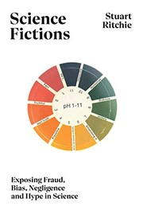

Science Fictions: How Fraud, Bias, Negligence, and Hype Undermine the Search for Truth
Book·Stuart Ritchie, 2020·科学虚构：科学中的欺诈、偏见、疏忽与炒作

Describes how fraud, bias, carelessness and hype damage scientific research, including the reproducibility crisis in psychology.
- Author
- Stuart Ritchie
- Year
- 2020
- Difficulty
- Beginner
- Kind
- Critique
- Schools
- Replication Crisis and Open Science
- Core theories
- Reproducibility Project: Psychology
Editions
- English edition Science Fictions: How Fraud, Bias, Negligence, and Hype Undermine the Search for Truth Stuart Ritchie · Metropolitan Books, first edition · 2020 Open Library ↗